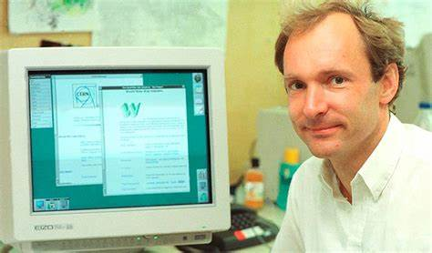
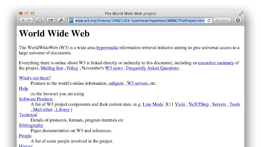

El laboratorio del CERN en Suiza es uno de los centros científicos más importantes del planeta, y como tal, estaba muy bien conectado con otras instituciones similares. Fue uno de los primeros en utilizar ARPANET, la predecesora de internet.
Entre los 10,000 empleados del CERN repartidos por varios laboratorios, la comunicación era constante y necesaria, y se quejaban de que aún con el correo electrónico, disponible para ellos desde los años 80, no era suficiente para la cantidad de trabajo desarrollado, el número de usuarios y los datos intercambiados. Además, no todos los ordenadores de los usuarios utilizaban el mismo sistema operativo, lo que complicaba aún más las cosas. En resumidas cuentas, Berners-Lee y su equipo se pusieron manos a la obra para resolver el problema.
Tomando como base ENQUIRE, un sistema de intercambio de datos creado por él mismo en su primera estancia en el CERN, Berners-Lee conectó el HTTP, el sistema de enlaces en el que también había trabajado, con el TCP, el protocolo de control de transmisión creado unos 15 años antes. Berners-Lee simplemente unió todos esos elementos ya existentes con el sistema de nombre de dominios y !voila!
Había nacido la “World Wide Web”.
Fotografía: Tim Berners-Lee
Tim Berners-Lee sabía de qué iba la cosa de la WWW, pero también era consciente de que la mayoría de usuarios no entendía mucho de informática, y decidió abrir la primera página web de la historia para explicar cómo funcionaba. Esa página aún existe (estuvo desactivada unos años, pero el W3C la ha restaurado), aunque no tiene exactamente la misma apariencia que la primera versión, diseñada en noviembre de 1990. En este enlace, http://info.cern.ch/hypertext/WWW/TheProject.html es posible verla en su versión de 1992, pero es muy similar a la original, según su propio autor.
Fotografía: Primera página web de la historia
Autor: Nebot Ferrando, Sergi.
Actividad: ASIX1M4UF1A4-Mi primera página HTML